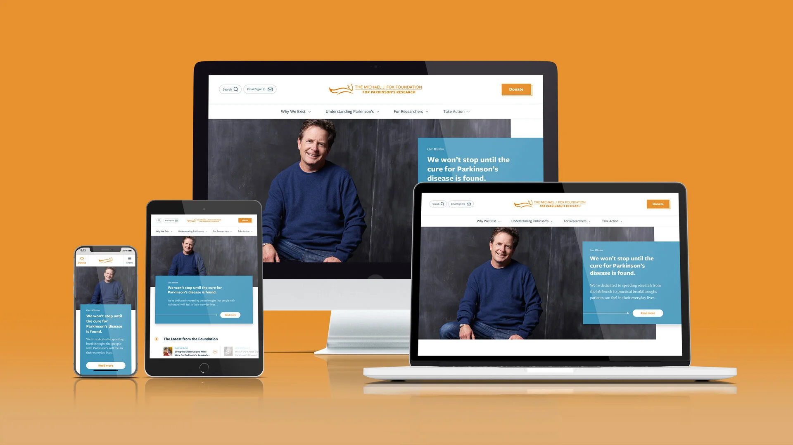
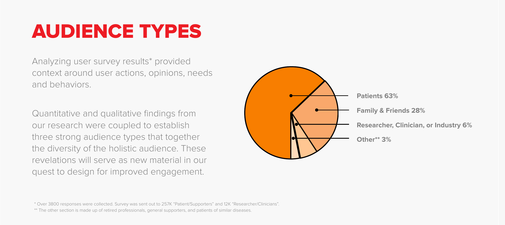
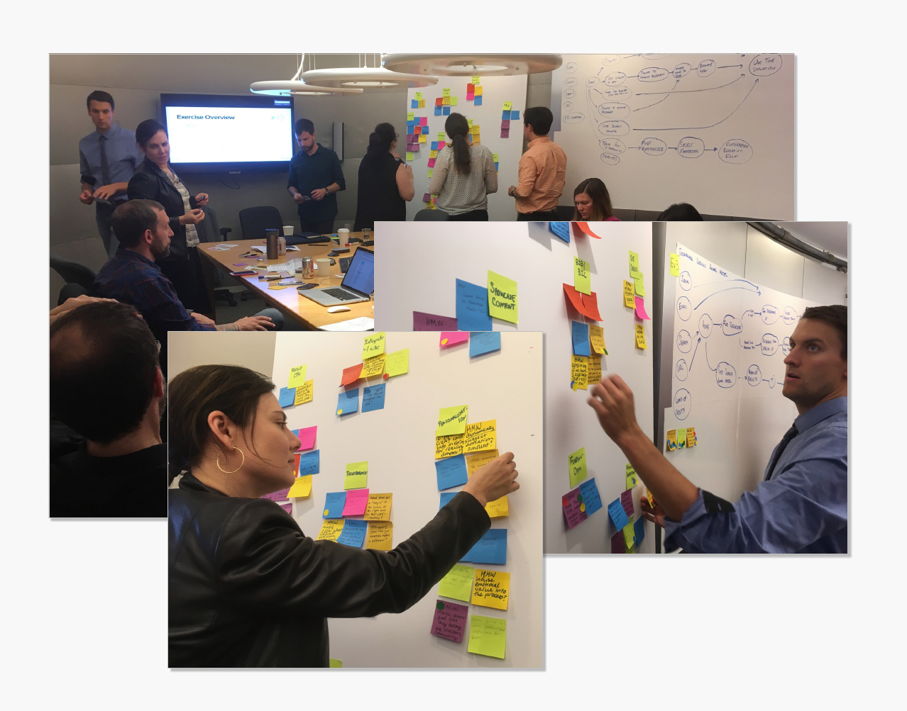
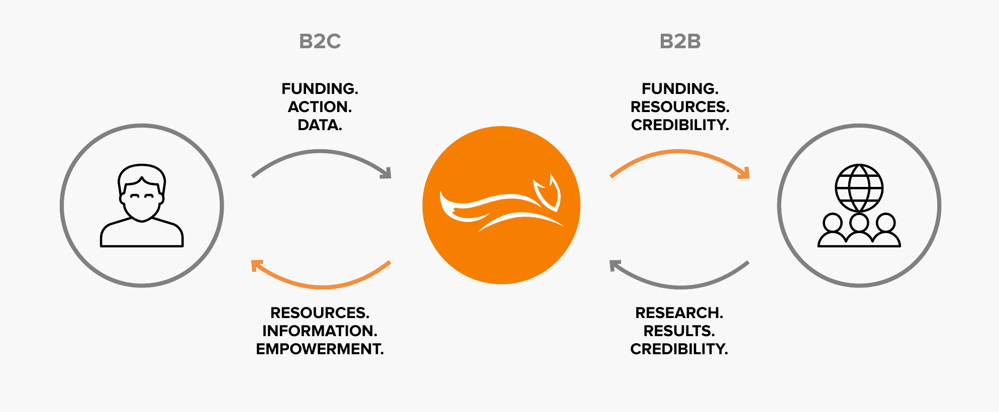
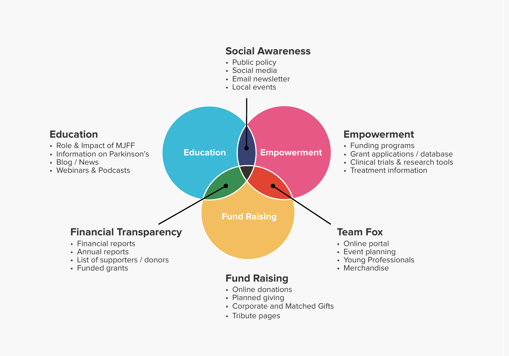

Michael J. Fox Foundation: Discovery to delivery for a Parkinson's leader.
MichaelJFox.org sits at the heart of the Foundation's digital ecosystem: its primary channel to patients, families, researchers, and donors. Working at Mondo Robot, I helped co-build the new site across the full arc of the project, from UX discovery at scale, through the strategy it produced, to the interactions and motion that brought the design to life in production.
Good information, hiding in plain sight.
In 2016 the Foundation set out to co-build a website worthy of its role as a visionary funder in the Parkinson's field. The site had to educate patients and families, equip researchers and clinicians, power fundraising, and let in-house teams manage all of it as needs evolved.
The analytics made the case for change bluntly: roughly 70% of visitors saw only a single page, and nearly half spent under a minute on the site. People were arriving, not finding a path, and leaving.
"Generally, I have to click around to get a sense of where information resides. The info is good when I find it, but it isn't as well organized as it could be."
Foundation site visitor, discovery survey

Listening at scale
Discovery was deliberately broad, and it was real research rather than a checkbox. We ran a content audit, a competitive analysis, a comparative analysis of more than 30 organizations, stakeholder interviews, and an analytics review across Google and Adobe. Then we sent a survey to roughly 257,000 patients and supporters and 12,000 researchers and clinicians, and synthesized more than 3,800 responses.
The survey did more than gather opinions. It gave the whole project a factual picture of who the audience actually is: 63% patients, 28% family and friends, 6% researchers, clinicians and industry. Two profoundly different audiences, one front door.

The workshop: walking the real journeys
With the research synthesized, we met in person for a collaborative workshop. We mapped existing user flows step by step, walked the journeys real people take, and captured How Might We questions for every pain point, then organized and prioritized them as a team. Four journeys anchored the session:
Journey 01Patient searching for dystonia treatment
- HMW personalize the experience by where users live?
- HMW improve on-site search?
- HMW eliminate dead ends?
Journey 02Family member looking to donate
- HMW make giving easier across web, mobile, and wallet?
- HMW show the impact a donation will have?
- HMW bring tributes, donations, and Team Fox under one umbrella?
Journey 03Researcher seeking an animal model
- HMW reduce the amount of info and clicks?
- HMW better organize the research-tools catalog?
- HMW segment content without excluding anyone?
Journey 04Patient seeking a new therapy
- HMW explain the latest trials in layperson's terms?
- HMW convey real momentum in research?
- HMW surface related news on therapy pages?

The insight: a value exchange, not a website
The defining insight from discovery was structural. MichaelJFox.org is the catalyst for a value exchange between two very different audiences: patients, family, and friends give funding, action, and data; researchers, clinicians, and industry give back research, results, and credibility. The Foundation sits in the middle, and the website is where the exchange happens.
That single reframe made the priorities obvious. The site's job isn't to store content; it's to strengthen both sides of the loop: help supporters act, help researchers work, and make each side's contribution visible to the other.

Strategy: three areas of opportunity, one vision
All of the synthesis rolled up into three strategic areas that gave a sprawling content ecosystem a reason to get organized:
Content life cycle
Architect content intentionally: showcased, explained in plain language, and richly related to other content instead of dead-ending.
Personalized wayfinding
Clear information architecture and navigation through a fragmented ecosystem of subdomains, consolidated into one guided experience.
Genuine connection
Personalization and a real sense that what people do has impact, so visitors become advocates rather than one-page bounces.
We also mapped the Foundation's six content types and their overlaps, from education to fundraising to empowerment, so the new architecture reflected how the content actually relates rather than how departments are organized.

"MichaelJFox.org gives audiences a clear, guided journey through their Parkinson's experience, empowering them to make a positive impact on PD research over time."
Vision statement, from the discovery
Interactions & motion: subtle, on purpose
With the strategy set, I focused on the interactions and animations: intentionally subtle moments designed to reinforce the brand while improving clarity, flow, and usability. Nothing moves for decoration; motion confirms actions, guides attention, and makes a large site feel responsive rather than busy.
Each interaction was documented with detailed notes and behavior guidelines, and I worked closely with the front-end engineering team so design intent survived all the way into production. These are captures of that work:
Discovery earned the right to design.
The most valuable move on this project was reframing a website redesign as a value-exchange problem between two audiences. That one lens made priorities obvious, gave every stakeholder a shared compass, and turned a sprawling content ecosystem into a system with a job.
- Broad, honest research made every later decision defensible, from the information architecture down to the motion.
- Four real user journeys, walked step by step, turned abstract pain points into concrete How Might We design questions.
- Documented interaction guidelines kept design intent intact through engineering and into the live site.
- The brand personality that came out of discovery, approachable, optimistic, straightforward, gave the whole team one voice to design toward.
Want the longer version?
There’s a lot more in the research than fit here — happy to get into it.